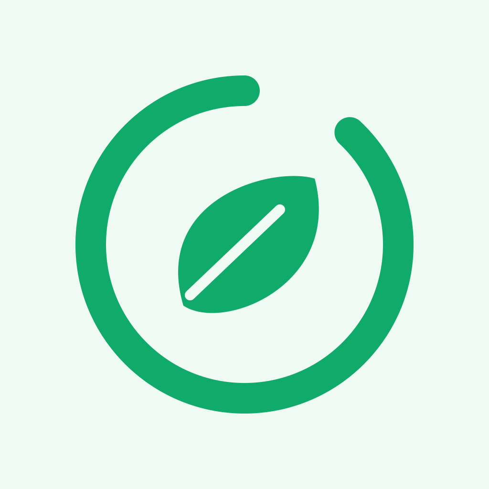
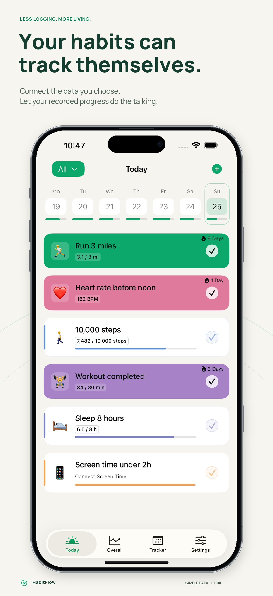
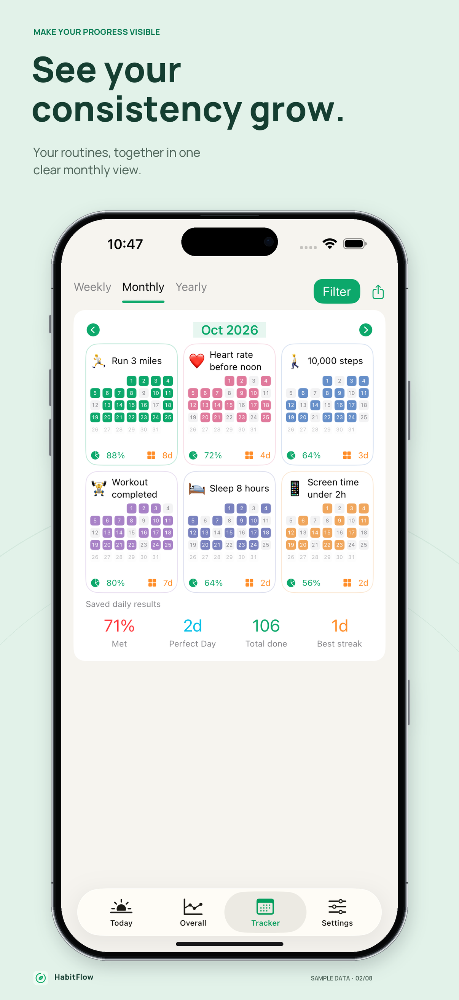
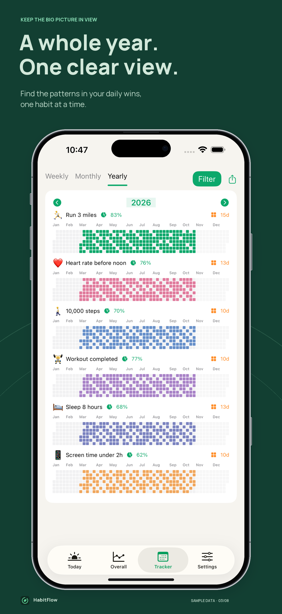

Let your data help.
Turn supported Health and iPhone motion records into goals. Keep manual check-ins for the things only you can measure.

HabitFlowLESS LOGGING. MORE LIVING.
If your phone can measure it, you can turn it into a habit. Connect the data you choose, set your goals, and see your consistency grow.
Turn supported Health and iPhone motion records into goals. Keep manual check-ins for the things only you can measure.
Choose targets, time windows, task days, reminders, emojis, and colors. Start from a template or create your own rule.
Explore weekly, monthly, and yearly calendars, completion rates, and streaks. Find the patterns in your everyday routines.



App images show synthetic sample data. Automatic tracking depends on permission, recorded measurements, device support, and iOS delivery timing. Some measurements need another app or device to record them first. Requires iOS 18 or later.
Create Screen Time usage goals for the apps, categories, and websites you choose. HabitFlow measures supported usage thresholds; it does not block apps. Saved outcomes begin when monitoring starts, and below-limit goals require a fully monitored window.
Habit data is stored and evaluated on your device. No account, advertising, analytics SDK, or automatic network upload. You choose which data to connect and can revoke access in iPhone Settings.